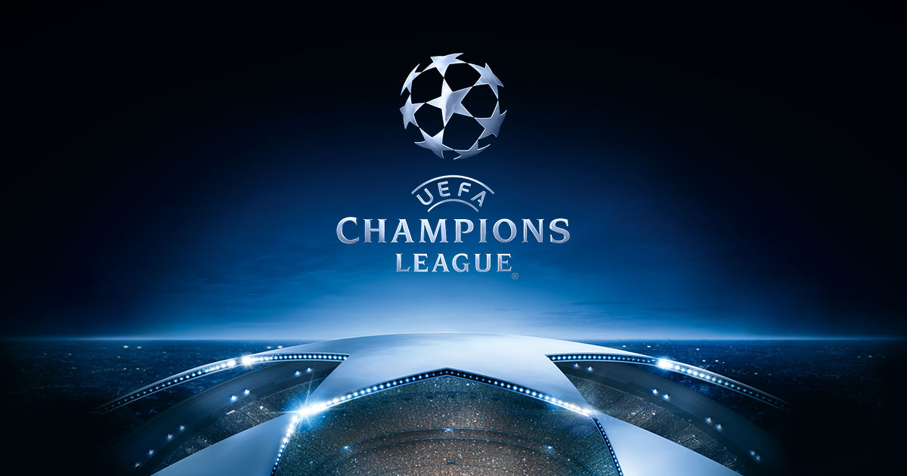
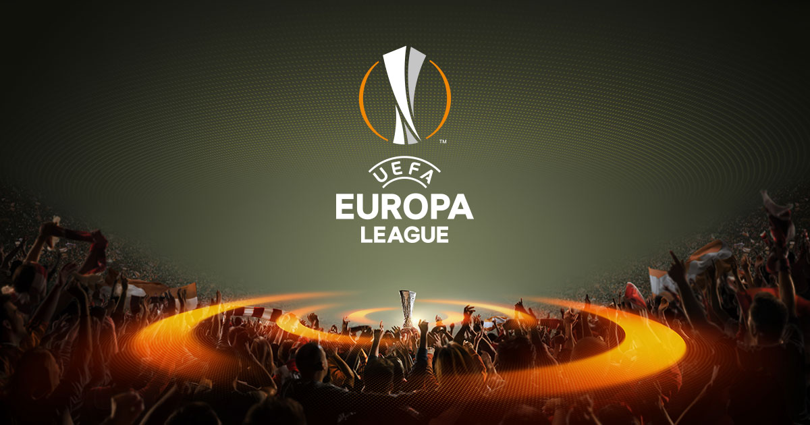

The UEFA Champions League is an annual continental club football competition organised by the Union of European Football Associations (UEFA) and contested by top-division European clubs. It is one of the most prestigious tournaments in the world and the most prestigious club competition in European football, played by the national league champions (and, for some nations, one or more runners-up) of the strongest UEFA national associations. The UEFA Champions League final is the most watched annual sporting event worldwide. The final of the 2012 13 tournament had the highest TV ratings to date, drawing 360 million television viewers.
Introduced in 1992, the competition replaced the European Champion Clubs' Cup, or simply European Cup, which had run since 1955, adding a group stage to the competition and allowing multiple entrants from certain countries. The pre-1992 competition was initially a straight knockout tournament open only to the champion club of each country. During the 1990s, the format was expanded, incorporating a round-robin group stage to include clubs that finished runner-up of some nations' top-level league. While most of Europe's national leagues can still only enter their national league champion, Europe's strongest national leagues now provide up to four teams for the competition, and will provide up to five teams from the 2015 16 seasononwards.The UEFA Champions League is an annual continental club football competition organised by the Union of European Football Associations (UEFA) and contested by top-division European clubs. It is one of the most prestigious tournaments in the world and the most prestigious club competition in European football, played by the national league champions (and, for some nations, one or more runners-up) of the strongest UEFA national associations. The UEFA Champions League final is the most watched annual sporting event worldwide. The final of the 2012 13 tournament had the highest TV ratings to date, drawing 360 million television viewers. 
Introduced in 1992, the competition replaced the European Champion Clubs' Cup, or simply European Cup, which had run since 1955, adding a group stage to the competition and allowing multiple entrants from certain countries. The pre-1992 competition was initially a straight knockout tournament open only to the champion club of each country. During the 1990s, the format was expanded, incorporating a round-robin group stage to include clubs that finished runner-up of some nations' top-level league. While most of Europe's national leagues can still only enter their national league champion, Europe's strongest national leagues now provide up to four teams for the competition, and will provide up to five teams from the 2015 16 seasononwards.Clubs that finish next-in-line in each nation's top level league, having not qualified for the UEFA Champions League competition, may be eligible for the next-level UEFA Europa League competition.
In its present format, the UEFA Champions League begins in mid-July with three knockout qualifying rounds and a play-off round. The 10 surviving teams enter the group stage, joining 22 other teams qualified in advance. The 32 teams are drawn into eight groups of four teams and play each other in a double round-robin system. The eight group winners and eight runners-up proceed to the knockout phase that culminates with the final match in May. The winner of the UEFA Champions League qualifies for the UEFA Super Cup and the FIFA Club World Cup. Clubs that finish next-in-line in each nation's top level league, having not qualified for the UEFA Champions League competition, may be eligible for the next-level UEFA Europa League competition.
In its present format, the UEFA Champions League begins in mid-July with three knockout qualifying rounds and a play-off round. The 10 surviving teams enter the group stage, joining 22 other teams qualified in advance. The 32 teams are drawn into eight groups of four teams and play each other in a double round-robin system. The eight group winners and eight runners-up proceed to the knockout phase that culminates with the final match in May.The winner of the UEFA Champions League qualifies for the UEFA Super Cup and the FIFA Club World Cup.
The 2017 18 UEFA Europa League is the 47th season of Europe's secondary club football tournament organised by UEFA, and the 9th season since it was renamed from the UEFA Cup to the UEFA Europa League.The 2018 UEFA Europa League Final will be played at the Parc Olympique Lyonnais in Décines-Charpieu, France. The winners of the 2017 18 UEFA Europa League will automatically qualify for the 2018 19 UEFA Champions League group stage, and also earn the right to play against the winners of the 2017–18 UEFA Champions League in the 2018 UEFA Super Cup. Manchester United qualified for the 2017 18 UEFA Champions League as the title holders of Europa League. They are unable to defend their title as they qualified for the Champions League knockout phase.
The UEFA Cup was preceded by the Inter-Cities Fairs Cup, which was a European football competition played between 1955 and 1971. The competition grew from 11 teams during the first cup (1955 58) to 64 teams by the last cup which was played in 1970 71. It had become so important on the European football scene that in the end it was taken over by UEFA and relaunched the following season as the UEFA Cup.The UEFA Cup was first played in the 1971 72 season, with an all-English final of Wolverhampton Wanderers against Tottenham Hotspur, with Spurs taking the first honours. The title was retained by another English club, Liverpool, in 1973, who defeated Borussia Mönchengladbach in the final. Borussia would win the competition in 1975 and 1979, and reach the final again in 1980. Liverpool won the competition for the second time in 1976 after defeating Club Brugge in the final. 
The competition was traditionally open to the runners-up of domestic leagues, but the competition was merged with UEFA's previous second-tier European competition, the UEFA Cup Winners' Cup, in 1999. Since then, the winners of domestic cup competitions have also entered the UEFA Cup. Further, clubs eliminated in the third qualifying round of the UEFA Champions League and the third-placed teams at the end of the group phase could go on to compete in the UEFA Cup. Winners of some selected domestic League Cup competitions are also admitted.
The UEFA Cup, also known as the Coupe UEFA, is the trophy awarded annually by UEFA to the football club that wins the UEFA Europa League. Before the 2009 10 season, both the competition and the trophy were known as the UEFA Cup.
Before the competition was renamed the UEFA Europa League in the 2009 10 season, the UEFA regulations stated that a club could keep the original trophy for a year before returning it to UEFA. After its return, the club could keep a four-fifths scale replica of the original trophy. Upon their third consecutive win or fifth win overall, a club could retain the trophy permanently. However, under the new regulations, the trophy remains in UEFA's keeping at all times. A full-size replica trophy is awarded to each winner of the competition. Also a club that wins three consecutive times or five times overall will receive a multiple-winner badge. As of 2016 17, only Sevilla has earned the honour to wear the multiple-winner badge, having achieved both prerequired feats in 2016.The trophy was designed and crafted by Bertoni for the 1972 UEFA Cup Final. It weighs 15 kg and is silver on a yellow marble plinth.
Click here for Sky Sports Football.
Click here for the premier league standings
Click here for w3schools website.
Note: You can also get to the links by using the "Tab" button on you keyboard.
If you need to make the font bigger please.